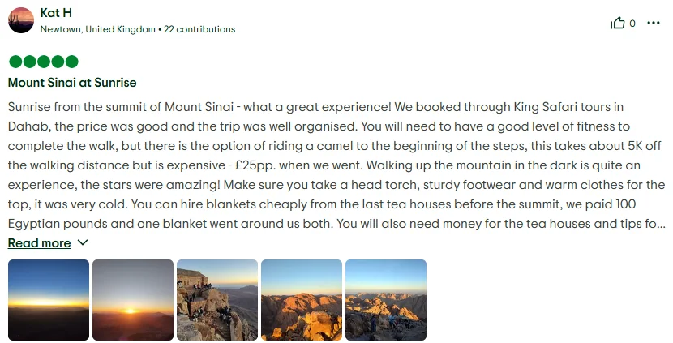

Klasyczny wschód słońca na Górze Mojżesza (Synaj), ale trochę inaczej. Większość wycieczek grupowych wyjeżdża z Dahab o 22:00. My celowo wyjeżdżamy o 21:00: na szczycie robi się bardzo tłoczno, więc wcześniejszy start oznacza, że wchodzicie przed wszystkimi i przez chwilę macie szczyt prawie tylko dla siebie. Po wschodzie słońca schodzicie do klasztoru św. Katarzyny na jego otwarcie.

Noc
- 21:00: wyjazd z The Hub w Dahab
- Około 2 godziny: jazda do Świętej Katarzyny
- Wejście: wita was miejscowy przewodnik górski i zaczynacie wspinaczkę. To 5 km i około 3 godzin: pierwsze dwie trzecie to szlak, ostatnia część to 750 kamiennych schodów
- Na szczycie: przez chwilę szczyt jest prawie tylko wasz, potem dochodzą inne grupy i robi się tłoczno. Czekamy na wschód słońca
- Po wschodzie słońca: zejście z góry
- 09:00: klasztor się otwiera, a przewodnik z klasztoru (inny przewodnik) wszystko wam pokazuje
- 10:00: spotkanie z samochodem i powrót, przyjazd do The Hub około 12:00
Wewnątrz klasztoru
Klasztor św. Katarzyny to jeden z najstarszych działających klasztorów na świecie, u stóp Góry Mojżesza. Z przewodnikiem z klasztoru zobaczycie Krzew Gorejący, gdzie Mojżesz rozmawiał z Bogiem, Studnię Mojżesza i kościół klasztorny z wiekowymi ikonami i historią.

O wielbłądach
Wielbłądy nie są wliczone, ani w górę, ani w dół. Naprawdę polecamy iść pieszo, chyba że jesteście bardzo zmęczeni. Jeśli już bierzecie wielbłąda, to tylko w górę, nigdy w dół: przy schodzeniu pochyla was do przodu między nogami wielbłąda i bardzo trudno się utrzymać.
W cenie
- Transport z The Hub w Dahab i z powrotem
- Wstęp do Parku Narodowego Świętej Katarzyny
- Miejscowy przewodnik górski
- Przewodnik z klasztoru
Nie wliczone: kolacja, śniadanie i napoje, bilet do muzeum w klasztorze, wielbłądy, napiwki i wydatki osobiste.
Zabierz ze sobą
- Paszport: ważne, na drodze są punkty kontrolne
- Wygodne buty do chodzenia
- Latarkę lub czołówkę
- Ciepłe warstwy ubrań: na szczycie jest bardzo zimno
- Wodę i przekąski (nie są wliczone)
- Okulary przeciwsłoneczne
- Ubranie zakrywające ramiona i kolana, do klasztoru
- Trochę gotówki na muzeum, napoje lub wielbłąda
Nie zabieraj
- Drona (drony są w Egipcie zakazane)
- Szortów ani koszulek bez rękawów na wizytę w klasztorze
- Ciężkich bagaży: wszystko niesiecie sami na górę
Cena
$400 za samochód, 1–4 osoby
Zarezerwuj wycieczkę
Wyślij nam datę i liczbę osób na WhatsApp. Potwierdzimy termin i wyślemy bezpieczny link do zapłaty zaliczki. Resztę płacisz w Dahab.
Rezerwuj przez WhatsAppOpinie naszych gości



Rezygnacja
Bezpłatna rezygnacja do 3 dni przed wycieczką. Przy późniejszej rezygnacji pobierana jest pełna cena.